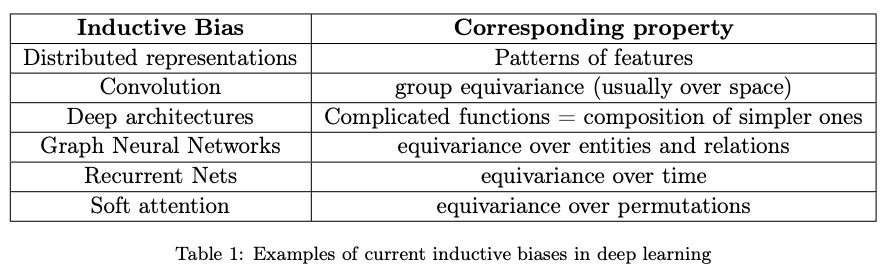

[论文阅读]Inductive Biases for Deep Learning of Higher-Level Cognition
论文 link：https://arxiv.org/abs/2011.15091
相关演讲：Yoshua Bengio: From System 1 to System 2 Deep Learning (NeurIPS 2019)
首先放上一个我做的论文报告的 slide 吧：
现在正文开始！
注：本文是笔记而非原论文的翻译（但几乎也快是了），掺杂了个人叙述，如有不妥欢迎讨论。
1 深度学习收敛了吗？
Has Deep Learning Converged?
任何一个机器学习入门课程/博客/视频/教程，必然会不厌其烦地强调一点：我们必须将数据集划分为训练集 (training set) 和测试集 (test set)，在需要精细调超参数的场景下还应划分验证集 (validation set)，原因是避免报告了过拟合的结果——模型直接记住了训练数据从而在训练集上表现极为优异，但是面对没有见过的数据（测试集）时性能一落千丈。这往往被称为模型的泛化性 (generalization ability)。
但是，上述泛化性真的足够「泛」吗？
众所周知，机器学习研究者的一个共识或假设是「训练集和测试集应是同分布的」，但是真实世界往往不这么理想——在实际应用中，模型面对的数据分布可能会与训练数据不同、可能会有很多干扰、可能会随着时间推移而变化……因此，如果我们希望让现有的机器智能向人类智能迈步前进，就必须解决一个问题——如何让模型具有对分布外数据的泛化能力？
Anirudh Goyal 和 Yoshua Bengio 的这篇论文的主要假设 (hypothesis) 是——为了从分布内泛化走向分布外泛化，我们需要向深度学习算法中加入更多的归纳偏置 (inductive biases)。论文希望通过研究人类在认知活动中所利用的归纳偏置，帮助深度学习进一步的发展。
那么当下众多表现优异的机器学习/深度学习模型和人类智能的差距在哪里呢？这些模型往往只在某一个特定的任务上表现很好，但人类智能恰恰相反——人们能够用一种统一 (unified) 的方式理解周围的环境，并在面对新任务时利用已有知识快速地适应。有相关研究使用多个数据集训练，每个数据集从某个角度揭示事物，但这没有从本质层面解决问题。作者认为，要真正解决问题，我们必须抛弃「训练集和测试集同分布」的假设，并转而寻求新的假设——不同任务和不同数据分布之间是怎样联系的。
这也许也意味着，我们需要找到一种方法跳出统计学习的框架，不是把数据集看成一组独立同分布的数据，而是在一个动态的变化中找寻数据背后本质的东西。
当然，这不是否定大量、多样的数据的作用——它们无疑是使得现在的深度学习取得巨大的进展的重要推动力。只是说，要让机器像人类一样具有快速适应新环境的能力，我们需要诉求于数据以外的东西，比如一种更高层次的知识表示方式。本论文指出一种可行的思路是：将知识分解为小的片段，当使用时根据需要动态地将这些片段组合起来。这种特点在人类自然语言中表现得非常明显。
2 关于归纳偏置
About Inductive Biases
一个非常有意思的问题：我们的训练目标既然是让模型尽可能拟合训练集，那它的泛化能力究竟是从哪里来的呢？答案是一些先验的偏好 (preferences) 或称归纳偏置 (inductive biases)。目前已经在各种神经网络中使用的偏置如下表所示：

归纳偏置与算法
很多模型的架构、优化目标、算法的设计等等本身就隐含了归纳偏置。典型的例子像是卷积隐含了平移不变性、正则化项隐含了更简单的模型……但把某些归纳偏置设计到机器学习方法之中不是一件容易的事，这往往是机器学习论文的核心贡献。
归纳偏置与数据
如果缺少足够强大的归纳偏置，可以用更多的数据来弥补。当数据集非常大的时候，归纳偏置的作用也许会变得较小，这时一些迁移学习的结果更能体现出归纳偏置的优势。
归纳偏置让学习更简单
诸如 attention, residual connections 等方法让训练变得更简单、收敛更快。
智能体，序列决策，非稳定数据流
在强化学习的第一课，我们知道了强化学习与其他有监督、无监督学习最不同的一点就是：其数据来源不是稳定的独立同分布数据，而是时序的、不稳定的数据流，而智能体的任务就是在这样的环境下做出决策。也许人们会认为在其他任务中，比如一个简简单单的目标检测，我们不需要考虑这些东西。但如果我们想建立能够适应各种数据分布的模型，在分布变化的序列数据上训练是必要的。
迁移学习 (Transfer Learning) 与持续学习 (Continual Learning)
要谈论迁移学习，我们必须明确的两点是：1. 迁移的任务和源任务之间有什么共同点，有什么是稳定不变的？2. 它们有什么区别，这样的变化是怎样产生的？作者进而联想到了元学习 (meta-learning)：
1 | |
系统性泛化 (systematic generalization) 和分布外泛化 (OOD generalization)
Systematic generalization 指人们可以通过组合一个新事物具有的特征来了解新事物。一个有趣的点是，这种认知方式甚至能够泛化到根本不存在的事物上——即便你能收集到无限多的数据，也无法看到这种不存在的组合。人类智能用这种组合式的归纳偏置，从有限的数据学习并泛化到更大的概念去。
3 基于高层次认知的归纳偏置是通向泛化 OOD 系统的一条路径
Inductive biases based on higher-level cognition as a path towards systems that generalize OOD
我们要从人类智能中学习，必然离不开一些认知神经科学的研究。本节将从一些神经科学的发现出发，启发我们为深度学习找到归纳偏置。
3.1 大脑中有意识处理 vs 无意识处理
Conscious vs Unconscious Processing in Brains
在人类的大脑中，信息处理有两种模式：
- 无意识 (unconscious) 的处理：也称习惯性 (habitual) 的处理、system 1 cognition，是默认的行为
- 有意识 (conscious) 的处理：也称控制性 (controlled) 的处理、system 2 cognition，是在出现新的情况时的行为，需要额外的注意力
对应的，知识也分为两种：
- system 1 knowledge：直觉上的、隐式的知识
- system 2 knowledge：能够显式地表达、交流和推理的知识
对于目前的深度学习方法，它们擅长于 system 1 task，即能在短时间中（GPU 上）在训练它们的数据上得到好的结果；另一方面，人类擅长于 system 2 task，具有快速学习和系统性泛化的能力。因此，我们希望下一代的深度学习技术能结合这两方面：system 1 / implicit / unconscious + system 2 / explicit / conscious. 接下来的部分将提出一些有助于提升 system 2 能力的 inductive bias.
3.2 高层次表征将可用语言表达的概念描述为语义变量
High-level Representations Describe Verbalizable Concepts as Semantic Variables
本论文提出的最重要的归纳偏置：「有意操控的高层次变量基本都是可用语言表达的」。这里的高层次语义变量可以想象为一个单词（或短语，反正就是描述一个事物）。从这个归纳偏置中，我们可以衍生出其他的归纳偏置。当然，这些归纳偏置并不能涵盖整个世界的方方面面，只需要涵盖能够用语言表达的方面即可。其余的部分可以由 system 1 来做（例如 encoder-decoder 将低层次信息映射到高层次变量）。
这个归纳偏置有什么用呢？我们可以做出这样的假设：存在一个简单的有损的映射，从高层次语义表征映射到自然语言的表示。实操中，我们可以用 attention 机制来产生这个映射。这样，底层的自然语言表示可以看作是对高层语义表征的一个弱监督，只要二者有简单的关系即可。
3.3 语义变量具有因果作用，关于它们的知识是模块化的
Semantic Variables Play a Causal Role and Knowledge about them is Modular
生物学的研究表明，大脑由模块化的方式组成，有一组专家模块之间进行稀疏的交流。受此启发，我们可以将知识分解为可重组的片段，所谓稀疏，是指任意时刻只会有少量的片段被调入，然后选择哪些模块将与哪些知识发生作用。至于如何将知识进行分解，作者认为可以从理解世界如何运作的因果观点中获取灵感。
在结构化因果模型中，一个常见的假设是知识应该被分解成独立的 mechanisms，其中每个 mechanism 和一个或多个影响变量有关，而一个 mechanism 不能提供关于 mechanism 的任何信息。这样如果一个 mechanism 发生变化，其他的 mechanism 不会发生变化。
3.4 分布在语义空间的局部变化
Local Changes in Distribution in Semantic Space
考虑一个智能体，假定环境在任何时刻都处于某种状态，那么其 observation 的分布的不稳定性来源于哪里？
- 环境、智能体的策略没有收敛，比如玩家开始玩一个新游戏
- 该智能体或其他智能体的因果干预，比如在一个迷宫中锁住一些门（可能导致最优策略急剧变化）
人类用自然语言描述这些变化时，往往用几个词就足以解释清楚。这意味着以下假设可以视为一个归纳偏置：「大多数分布的变化可以在适当的语义空间中被定位在局部」。这里的重点是「局部」，即只有少数的变量或机制需要因变化而改变。
3.5 世界的稳定属性
Stable Properties of the World
我们前面讨论了不稳定因素导致分布的变化，但世界具有很多稳定的方面的。我们希望尽可能多的知识是稳定的，智能体可以在整个生命周期中学习它们并最终收敛，同时希望智能体快速学习那些非稳定的部分。从这个角度，我们也看到了两种学习速度——和上文中 meta-learning 涉及到的类似。根据这些讨论，作者提出归纳偏置：「学习的速度应该有几种，稳定的方面学得更慢，不稳定的方面学得更快，并在快速变化之中发现稳定的方面」。
3.6 语义变量空间中的稀疏因子图
Sparse Factor Graph in the Space of Semantic Variables
这一节提出的归纳偏置是：「高层次概念之间的联合分布可以被稀疏因子图 (sparse factor graph) 所表示」。这里的重点是「稀疏」，因为任何联合分布都可以被因子图表示。
用语言表达知识就满足稀疏性：一句话中仅包含非常少的变量，但它却能表达出很多知识。这是因为这些变量具有很强的语义信息。相反，像素空间就不满足这样的稀疏性：很难从三个像素推导出某个像素的值。
有些研究者的工作将高层次的变量假设为边缘独立的，即联合分布可以被分解为独立边缘分布。但作者认为这背离了深度学习的初衷。这些高层次变量捕捉的语义特征可以用自然语言表达，因此应该具有稀疏的依赖关系。
3.7 变量，实例和可重用的知识片段
Variables, Instances and Reusable Knowledge Pieces
作者认为，不同于在因子图中分别定义特定的因子，我们应该定义一种「广义因子」(generic factors)，或称因子模板 (factor templates)、模式 (schemas) 等，是一种具有量词的类概率逻辑规则，类似于传统 AI 中的产生式规则。当我们提到“小明饿了会去吃饭”时，应该将其推广到“人饿了回去吃饭（一定概率）”。基于此，作者提出归纳偏置：「指定变量之间以来关系的独立 mechanisms 应是通用的，即可以以多种形式被实例化」。因此，因子图中我们不是存储某一个具体的实体，而是通用的模式。
3.8 学习或推理的因果链往往非常短
Relevant causal chains (for learning or inference) tend to be very short
大脑将感知到的输入划分为若干事件，并在需要时根据当前情况有选择性从遥远的过去的拉出相应的信息。基于此，作者提出归纳偏置：「学习或推理的因果链被分解成短的事件因果链，这些事件在时间上可能很远，但通过语义变量的高层次因子图联系起来」。
3.9 依赖于场景的处理包括目标、自顶而下的影响和自底而上的竞争
Context-dependent processing involving goals, top-down influence, and bottom-up competition
人类感知包含自顶而下和自底而上两种信号，前者包括相关场景和先验认知，后者包括真正感知到的事物。人类智能能够动态地结合二者，从而对扰动和噪声有鲁棒性。另外，我应该在处理的每一个层级、计算的每一个阶段都将自顶而下和自底而上的信号结合起来。综上，作者提出关于架构的归纳偏置：「自顶而下的环境信息和自底而上的感知信号应该在于低层次和高层次表征相关的计算的每一个层级动态地结合起来」。
3.10 从计算机编程获取的灵感
Inspiration from Computer Programming
直到现在我们都在从人类认知学中寻找归纳偏置，但编程语言也可以是一个启发点。
编程语言与人类自然语言相近，且具有语义信息，并总能够规约到机器指令。同时，它们为使用少量可重用的代码完成复杂功能提供了有效的抽象。
类和对象：已有相关的研究在探索，让循环神经网络中不同状态的模块动态地学习何时以及怎么共享参数。
递归：目前的许多网络并没有一个简单的方法学习处理递归方程。例如，前向传播网络（MLPs, convnets, transformers）在层与层之间没有共享参数，使得递归非常困难。
函数具有命名和特定类型的参数：
- 深度学习中的 key-value 注意力机制可以看做编程语言中用对命名变量做 hard 选择的 soft 版本。
- 在支持变量类型的语言中，参数类型需要和预期相匹配，query 和 key 可以看做预期类型和实例的实际类型。
如果 system 2 神经网络中的各个模块可以用具有命名和特定类型参数的函数表示，那么就可以将它们与具有预期形式的输入绑定，从而实现系统性泛化 (systematic generalization)。
4 因果关系的知识
Declarative Knowledge of Causal Dependencies
一个概率统计模型能捕获单一的联合分布，而一个因果模型能捕获一族联合分布，每个对应于不同的干扰，它修改其他未受干扰的分布。举个例子，概率论告诉我们 \(P(A,B)=P(A)P(B\mid A)=P(B)P(A\mid B)\)，但只有其中一个对应正确的因果结构，比如 \(A\) 表示海拔而 \(B\) 表示温度。
前置知识：贝叶斯网络中的每个节点表示一个随机变量，节点之间构成有向无环图 (DAG)，且满足给定某节点所有邻居的条件下，该节点与其他节点独立： \[ p(X_1,X_2,\ldots,X_n)=\prod_{i=1}^mp(X_i\mid \textbf{PA}_i) \] 结构化因果模型 (Structural causal models, SCMs)： \[ X_i:=f_i(X_{pa(i,C)},N_i)\quad\forall i\in\{1,\ldots,M\} \] 其中，\(f_i\) 是一个确定的函数，\(N_1,\ldots,N_M\) 是联合独立的一组噪声，\(pa(i,C)\) 是变量 \(i\) 在设置 \(C\) 下的父节点（直接原因），\(C\in\{0,1\}^{M\times M}\)，\(c_{ij}=1\) 表示节点 \(j\) 是节点 \(i\) 的父节点（即 \(X_j\in X_{pa(i,C)}\)）。因果结构学习指从观察和干预研究中恢复真实的 \(C\).
干预：没有实验，或干预，在一个纯观察的设置下，因果图只能在马尔可夫等价类的程度上被区分开来。为了得到真正的因果图，需要进行干预性实验。
4.1 独立因果机制
Independent Causal Mechanisms (ICM)
ICM Principle：一个复杂的模型，可以被视为由若干互相独立的机制构成的，即任一机制不应给其他机制带来任何信息或影响。
因果因子图 (Causal Factor Graph)：作者指出，有向图模型、甚至是结构化因果模型 (SCMs)，也许都与 ICM 的思想不一致，而因子图的特定形式（有向边代表因果方向）更加合适。
4.2 探寻因果干预导致的分布改变
Exploit changes in distribution due to causal interventions
Nature doesn't shuffle examples. 我们常常做的事情是将获取的数据打乱，从而得到 iid 的数据，但我们从自然界获取的数据不是 iid 的，我们应该利用其中的非稳定性而不是摧毁它。
4.3 深度学习的挑战
Challenges for Deep Learning
机器学习中的许多因果关系的工作假设因果变量本身具有已知的语义或是被观察到的。但是在实际中，一个试图了解其环境的 AI 智能体只能获取低层次变量（例如图片的像素和马达动作），因此它需要共同发现抽象的高层次表征和高层次因果关系。
4.4 元学习、因果关系、OOD 泛化和快速迁移学习之间的关系
Relation between meta-learning, causality, OOD generalization and fast transfer learning
Bengio 举过一个例子。假设 \(A,B\) 是两个随机变量，分别具有 \(N\) 个取值。我们假设 \(A,B\) 是相关的，目标是确定因果图是 \(A\to B\) 还是 \(B\to A\). 注意该因果图不能从单一的分布 \(p\) 观察到的数据中确定，因为它们同属一个马尔可夫等价类。为了区分这两种情形，除了利用分布 \(p\) 的样本，还要利用转移分布 \(\tilde p\) 的样本。
相关研究显示，在正确的因果图上模型能更快的适应到转移分布 \(\tilde p\).
4.5 动作和承受力是因果模型的一部分
Actions and affordances as part of the causal model
理解因果关系是人类认知中的重要部分。现实生活中，智能体除了需要从低层次观察中发现因果变量和关系以外，还需要了解高层次意图和动作如何与低层次观察以及对高层次因果变量的干预联系起来的。
这个观点的一个版本在心理学中称为承受力 (affordance)。学习承受力（作为智能体可以怎样影响环境和其他智能体的表征）比学习数据分布更强大。
目前，对于深度强化学习的许多表征学习方法来说，感知子系统首先收集感知信息建立起一个对环境的内部表示，然后将其和过去经验的表示一起用来决定行动方案。但与环境的持续行互动往往不允许智能体停下来思考、建立对周围环境的完整知识；相反，智能体应该准备好在短时间内进行调整，执行仅部分准备好的行动。
5 高层次认知的生物学启发
Biological Inspiration and Characterization of High-Level Cognition
5.1 人工智能研究和认知神经科学之间的协同作用
Synergy between AI research and cognitive neuroscience
我们可以从人类的认知神经科学中寻求灵感，促进人工智能的发展；同时，人工智能模型可以推动对神经机制的新认识，形成一个良性循环。
5.2 注意力机制
Attention
注意力机制是指依次选择对什么做什么计算。
基于内容的软注意力 (Content Based Soft Attention)：软注意力进行软的选择——我们对前一级的计算结果进行凸的组合，组合的权重来自于 softmax，体现出每个元素的 key vector 和某 query vector 的匹配程度。Attention 向网络引入了 non-local 的归纳偏置，使之能够推断长距离 (long-range) 依赖关系。Attention 也使得网络在集合而非向量（向量的各维是有序的）上操作。典型的 Transformers 中的注意力为： \[ \text{Attention}(Q,K,V)=\text{softmax}\left(\frac{QK^T}{\sqrt{d}}\right)V \]
作为动态连接的注意力 (Attention as dynamic connections)：注意力可以被想象为在若干计算块之间的动态连接，而在传统神经网络中，连接是固定的。
注意力实现了变量绑定 (Attention implements variable binding)：当每个因子的输入和输出都是一个对象或实体集合（每个对象或实体与一个 key 和一个 value vector 相关联），我们有一种类似于操纵编程语言变量的广义对象处理机制——将其看作可交换的函数参数。在传统神经网络中，一个神经元对固定的输入变量做计算，而有了 key-value 注意力后，一个神经元可以动态地选择哪些变量（具有 key/value vector）将被用来作为什么参数（每个参数有不同的 query embedding）。就好似编程传参时进行名字或类型匹配一样。
5.3 大脑和神经网络中的模块化
Modularity in the brain and in nueral networks
机器学习的目标是学习以一种灵活的方式去理解世界并与之互动。在每一时刻，不是所有可观察环境中的元素都会发生变化，因此对世界的方方面面建模是浪费的。因此我们需要模块化。
动态选择模块来解决一个任务对获取系统性泛化看起来是合适的。每个模块都能捕捉到一个知识片段，而有意识的处理过程只需即时选择那些目前相关的、需要连贯组合的模块。
5.4 全局工作空间理论
Global workspace theory, GWT
以下内容摘录自 Wikipedia。
全局工作空间理论（英语：Global workspace theory，GWT）是美国心理学家伯纳德·巴尔斯提出的意识模型。该理论假设意识与一个全局的“广播系统”相关联，这个系统会在整个大脑中广播资讯。大脑中专属的智能处理器会按照惯常的方式自动处理资讯，这个时候不会形成意识。当人面对新的或者是与习惯性刺激不同的事物时，各种专属智能处理器会透过合作或竞争的方式，在全局工作空间中对新事物进行分析以获得最佳结果，而意识正是在这个过程中得以产生。
GWT可以用“剧院比喻”来解释。在“意识剧场”中，“选择性注意的聚光灯”会在舞台上照出一个照明圈。这个照明圈揭示了意识的内容，演员们进进出出，发表演讲或是相互交流。未被照亮的观众则在黑暗中（即无意识）观赏戏剧演出。在幕后，还有导演（执行程序）、舞台师、编剧、场景设计师等等。它们塑造了待在照明圈的可见性活动，但自身却不露面。
GWT 启发了本论文中的许多归纳偏置。
通过一个共享的工作空间实现一致性 (Coherence through a shared workspace)
GWT 主张一个共享的表征（黑板/工作空间），可以由任一智能处理器修改并广播给其他处理器。GWT 表明了一种转瞬即逝的记忆能力，在任何特定的时刻，只有一个一致的内容可以占主导地位。作者假设这是因为高层次语义变量之间联合分布因子图是稀疏的，因此推理的每一步只有少数变量需要同步。
串行和并行计算 (Serial and Parallel Computations)
不同模块的计算是并行的，但当它们需要与其他模块沟通时，信息会经过一个路由瓶颈。瓶颈的作用是选择少量的元素（知识片段）形成一个连贯的解释，广播给其他模块。由于每一步只选择少量元素，所以推理过程通常需要多步完成，这导致 system 2 计算的串行性（相比 system 1 计算的高度并行性）。
5.5 口头报告和基础语言学习
Verbal Reporting and Grounded Language Learning
有意识的内容是通过报告来揭示的，这表明有意识操纵的高层次变量与语言密切相关。然而，我们大脑中知道的很多东西不容易用语言描述，它们构成了 system 1 的内容。这意味着 system 2 （可用语言表述）的知识是不完整的——词语大多只是 system 1 中语义变量的指针。这意味着仅用大量语料训练模型，不足以建立起能理解句子含义的系统。自然语言理解系统有必要以一种将自然语言与它所指的内容相结合的方式进行训练，这是基础语言学习的想法。但是本论文的讨论表明，仅仅是被动地观察事物和它们的口头描述可能是不够的：为了捕捉人类所理解的因果结构，智能体有必要与环境主动交互，进而发现因果结构。
5.6 慢处理和解决分布外问题
Slow processing and out-of-distribution problem solving
人类经常面对自身或其他智能体的动作而导致的环境频繁变化。大多数时候，人类遵循其习惯性策略，但在处理不熟悉的环境时，往往会采用 system 2 认知。它使人类能够以非常强大的能力泛化到分布外的情况。这意味着 system 2 对面对变化时的灵活性和稳健型至关重要。
5.7 模块间的语言和通信拓扑结构
Between-Modules Interlingua and Communication Topology
如果大脑是由不同的模块组成的，那么我们需要思考它们之间是用怎样的语言交流的。GWT 的瓶颈可能会迫使这种语言的出现——例如模块 A 收到“有火”信息可能来自于其他任何模块（例如模块 B 通过嗅觉探测到火，模块 C 通过视觉探测到火），则模块 B 和模块 C 需要一种兼容的表示通过 GWT 瓶颈广播给 A.
然而，GWT 瓶颈并不是模块之间交流的唯一途径。大脑既使用固定的局部连接，也使用全局广播系统。这种分层现象在视觉中也存在（从感知到像素到物体识别），并且在卷积网络中已经得到了非常成功的使用。因此，我们需要考虑在深度网络中结合不同类型的通信方式：1. 靠近的模块可能直接通信而不使用全局通道；2. 远离的模块可以通过全局通道交换信息。
另外，GWT 中的工作存储区不仅仅是一个缓冲区，它还代表了不同模块都应该一致相信的变量。
5.8 推理 vs 陈述性的知识
Inference versus declarative knowledge
我们讨论过的知识表示有两种形式：陈述性知识（特别是因果关系和环境动态，具有明确的因果图结构），以及推理机制（特别是与模块相互交流以解决问题、回答问题、想象解决方案）。标准的图模型只代表陈述性知识，通常需要代价大的迭代计算（如蒙特卡洛马尔科夫链）来进行近似推理。然而，大脑需要快速的推理机制。只用陈述性知识（图模型）进行推理是非常灵活的（任何形式的“给定其他变量或想象的干预，预测一些变量”的问题都可以被回答），但也非常缓慢。我们还知道，在 system 2 被反复要求处理新情况后，大脑倾向于将这些反应模式烙在习惯性的 system 1 电路中，这些电路可以更快、更准确地完成工作，但已经失去了一些灵活性。这可能是 system 1（快速、并行、近似、不灵活的推理）和 system 2（较慢、串行、但更灵活的推理）之间的重要差异。
5.9 根据相关事件序列进行推理
Reasoning through Sequences of Relevant Events
时间信息处理任务通常要求将连续的时间流分割成不同的时间间隔或选定的事件序列。在基于时钟的分割中，边界在时间上的间隔是相等的，从而形成固定的时间间隔；在基于事件的分割中，边界取决于环境的状态，导致可变的时间间隔。认知科学和人工智能中的时间信息处理模型通常是前者（基于时钟）。然而，基于事件的分割可以大大简化时间信息处理的任务。一个与世界交互的智能体无法实时地处理所有信息，某种定向机制可以在相关刺激出现时提醒智能体（它不需要知道应该怎么处理，只需要探测到相关刺激的出现），使智能体能够处理和回应刺激。这个定向机制就实现了基于事件的分割。基于事件的分割可以解释诸如熟悉的路线感觉比陌生的路线更短的现象。
6 最近和正在进行的工作
Recent and Ongoing Work
6.1 Recurrent Independent Mechanisms (Goyal et al., 2019)
RIMs 的灵感来自于稀疏因子图假设（第 3.6 节）和因果知识模块化归纳偏置（第 3.3 节）所表明的「知识可分解为小的可交换片段」。
6.2 Learning to combine top-down and bottom-up information (Mittal et al., 2020)
这项工作基于与 RIMs 相同的归纳偏置，但增加了第 3.9 节中讨论的关于需要结合自上而下和自下而上信息流的归纳偏置。
6.3 Object Files and Schemata (Goyal et al., 2020)
出了RIMs 中的归纳偏置，这个架构包括了 3.7 节中对通用知识（规则、模式）的归纳偏置，这些知识可以被实例化到不同的对象上。
6.4 Sparse Attentive Backtracking (Ke et al., 2018)
理想情况下，注意力机制应该只选择可能相关的记忆中的几个。这样做的一个方法是，根据一些适当学习的注意力分数，只关注 top-k 相关记忆。
这项工作利用了 3.8 节相关因果链非常短的归纳偏置，尽管它没有明确地处理因果关系，且使用反向传播的形式进行分配 credit。
6.5 A meta-transfer objective for learning to disentangle causal mechanisms (Bengio et al., 2019)
本文作者研究了 3.4 节介绍的从因果关系研究中得出的关于分布变化的归纳偏置。工作表明，无论是理论上还是通过模拟，这样的假设确实有助于在干预之后更快地适应。
6.6 Learning neural causal models from unknown interventions (Ke et al., 2019)
本文扩展了前一篇论文，将同样的归纳偏置从具有两个因果变量的生成模型扩展到具有任意数量的因果变量的生成模型。为了避免可能的因果图数量的指数级增长，本文提出将图上的置信度分布因子化（逐渐适应），每条有向边有一个自由参数。此外，论文发现，推断哪个变量受到了干预有助于训练的收敛。它还提出了一种方法，将关于一些边的先验知识与对缺失的边的学习相结合。
7 展望未来的项目
Projects Looking Forward
本文提出的观点仍处于早期阶段，依旧存在许多开放的问题，作者在此强调几个问题：
- 剩下的一个很大的挑战是，共同学习一个大规模 encoder（低层次像素映射到高层次变量）和这些高层次变量的因果模型。一个理想的做法是基于模型的强化学习，其中因果模型将学习系统的随机性动态。Bengio 等人在小规模上（两个因果变量）做了研究，并使用了一个保证 Jacobian 矩阵没有奇异值 1 的 encoder 来避免崩溃。为了避免崩溃，一种可能的做法是在高层次使用对比损失 (contrastive loss)。
- 另一个主要的挑战是将陈述性知识表示（如结构化因果模型）和推理机制（也许用注意力和模块化实现，如 RIMs 及其变体）统一在一个架构中。现有的关于变分自编码器的工作可以作为灵感（在这种情况下，编码器是推理机，解码器是因果模型）。
- 目前大多数深度学习模型使用固定的参数共享和固定的有规律的内存访问模式，这很适合现代计算硬件（如 GPU 和 TPU）依靠 SIMD 并行。然而，本文所描述的注意力驱动的计算形式可能需要动态的、不规则的和稀疏的内存访问和参数共享，这并不适合 GPU，并且 minibatch 计算难以并行化。解决这个问题可能需要在神经架构、底层编程和硬件设计方面进行创新。
- 人类计划的方式与目前在基于模型的 RL（或基于 MCTS 和价值函数的 AlphaZero 等）中使用的方法非常不同。人类似乎利用了关于因果因子图的稀疏性的归纳偏置，以及抽象空间的推理序列可能非常短的事实。这意味着，当人类计划时，他们不建立完整状态的轨迹，而是建立部分状态的轨迹，其中只考虑状态的某些方面（变量）。此外，他们不会为每一个离散的时间步骤展开未来的轨迹，而是直接学习如何将时间上遥远的事件联系起来。当我们计划时，我们可以考虑新情况的可能性，如果一个模型错过了因果结构的重要方面，它可能不能很好地概括这些新的变化，计划可能从根本上高估或低估了一些新的可能性。
- 我们真的希望在模块和数据点的计算中具有稀疏性。这一点又很难用小批处理，而小批是充分利用GPU的必要条件。有效地优化这些计算是具有挑战性的，但可以大大有助于推动研究的发展。
- 扩展到大量的模块：大脑可能是由非常多的独立模块组成的，而目前模块化深度学习的大部分工作涉及的模块数量要少得多，比如20个。考虑新的算法和架构，以帮助扩展到非常多的模块，这将是很有趣的。
- 宏观和微观模块：GWT通常考虑的模块种类是相当高级的，例如，人脸识别、步态识别、物体识别、视觉常规、听觉语音感知、听觉物体识别、触觉物体识别。这些都是宏观模块，而不是把视觉输入分割成单一对象的模块，即微观模块。我们所做的大部分工作都集中在微观模块上。模块化的层次结构应该如何构建，以说明这些大规模和小规模的模块化方式？
8 回顾过去：与符号人工智能的联系
Looking Backward: Relation to Good Old-Fashioned Symbolic AI
system 2 和传统的符号人工智能有什么区别呢？我们首先回顾一些传统符号人工智能的问题，这些问题促使人们在深度学习的基础上建立解决方案。
- 我们想要高效的大规模学习，例如，SGD 的变种和现代深度学习的端到端学习。由于操作的离散性，在大规模的学习中进行纯粹的符号操作是具有挑战性的。
- 我们希望高层次的概念在低层次的观察和低层次的行动方面有语义基础（这是由大脑中的 system 1 计算完成的）。这一点很重要，因为对世界的一些理解（也许是很大一部分）并没有在有意识的 system 2 层面上体现出来，而这一点在纯粹用符号表示知识中完全没有。
- 我们希望高层次概念具有分布式表征：纯粹的符号表示使得每个符号与其他每个符号保持相同的距离，而分布式表示则通过一个矢量来表示符号，相关的符号会具有重叠的表示。
- 我们想要高效的搜索和推理。符号人工智能的一个计算瓶颈是搜索，一般来说是难以解决的，需要进行近似处理。变分自编码器显示了这种计算成本如何通过训练推理机制来摊销。这是我们目前所知道的唯一的通用的方法，它与认知神经科学中的习惯性技能从 system 2 转移到 system 1 是一致的。
- 我们想处理不确定性，大多数机器学习方法都是为了处理这个问题。
目前的深度学习已经具备了这些能力。现在缺少的是把系统性泛化和将知识分解成可交换的小片段整合进来，而这通常与符号人工智能有关。我们认为，由于上述原因，特别是第 1、3 和 4 点，仅仅在神经网络产生的表征之上使用符号方法是不够的。
9 结论
Conclusions
为了能够处理动态的、不断变化的环境条件，我们希望能够从 system 1 的深度统计模型转变为能够利用 system 1 的计算主干来执行 system 2 任务的深度结构模型。当今的深度网络可能可以受益于额外的结构和归纳偏置，从而在 system 2 任务、自然语言理解、分布外泛化和高效转移学习方面做得更好。作者试图澄清这些归纳偏置的一些内容，但还需要做很多后续的工作提高对此的理解，并找到适当的方法将这些先验因素纳入神经架构和训练框架之中。